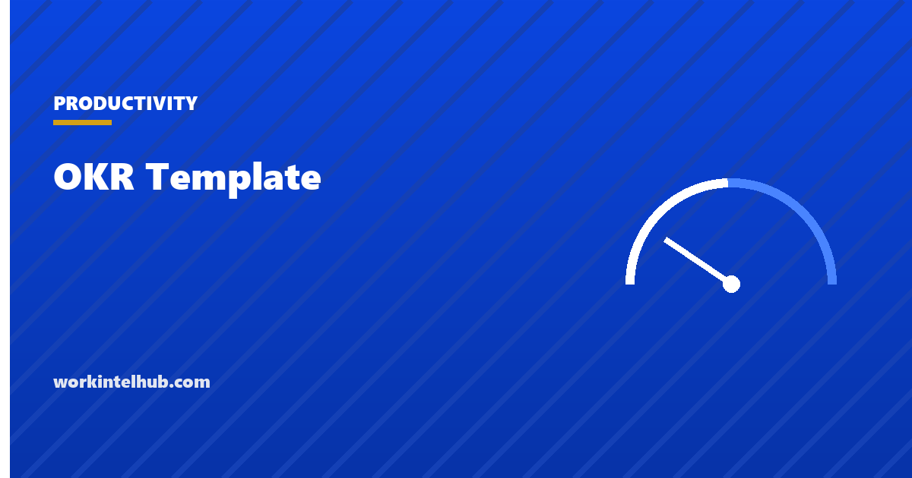

OKR Template

OKRs, objectives and key results, are a way of writing down what a team is trying to achieve and how it will know. The objective is a qualitative statement of the change wanted; the key results are two to five measurable outcomes that would prove it happened. Andy Grove built the method at Intel in the 1970s, John Doerr carried it to Google in 1999, and it has since been adopted, and frequently mangled, by most of the technology industry. The mangling usually takes one form: key results that are tasks, scored by whether they were done, which turns the method into a project plan with a new name.
The builder below writes an OKR with key results scored on the Google 0.0 to 1.0 scale from a start value to a target, so the score is progress, not effort. The rest of the page covers how to write each part, examples across functions, the scoring and cadence, and the failure modes.
OKR builder
Nothing typed here leaves your browser. Scores are calculated as progress from start to target on the Google 0.0 to 1.0 scale; enter current values at each check-in and the score updates.
Writing the objective and the key results
The objective answers "what do we want to be true at the end of the period?" in language a new team member would remember. It is qualitative, ambitious, and short: "Make onboarding so smooth that customers never need to call us in their first month." It is not a metric and not a project.
Each key result answers "how would we know?" with a number that moves from a starting value to a target inside the period. The test of a key result is whether it could be achieved without the objective being met, or the objective met without it moving. If either is true, it measures the wrong thing. "Ship the new onboarding flow" is a task; it can be shipped and change nothing. "First-month support tickets per new customer from 3.2 to 1.5" is a key result; if it moves, the objective is closer.
| Function | Objective | Key results (from, to) |
|---|---|---|
| Customer success | Customers succeed in month one without calling us | First-month tickets per customer 3.2 to 1.5; onboarding completed within 14 days 61% to 85%; onboarding CSAT 4.1 to 4.6 |
| Sales | Win the mid-market on our terms, not on discount | Average discount 18% to 10%; mid-market win rate 22% to 30%; deals with executive sponsor 40% to 70% |
| Engineering | Make releases boring | Change failure rate 15% to 5%; lead time for changes 9 days to 3; unplanned work share 35% to 20% |
| HR | Hire faster without hiring worse | Time to hire 52 days to 38; offer acceptance 68% to 82%; 90-day retention of new hires 88% to 95% |
| Operations | Run the warehouse on the schedule, not on overtime | Overtime hours per week 140 to 60; orders shipped same day 78% to 92%; absence rate 4.1% to 2.8% |
| Individual | Become the person the team asks about the data | Dashboards owned 0 to 3; analysis requests answered within 2 days 50% to 90%; peers trained 0 to 4 |
Three key results is the working number. Fewer and the objective is under-specified; more than five and the team cannot hold them in mind. The HR metrics and productivity formula pages supply definitions for the operational numbers many key results use.
Scoring and cadence
Google scores each key result from 0.0 to 1.0 as the share of the distance from start to target that was covered, and averages them for the objective. What Matters, John Doerr's OKR resource, gives the reading: 0.7 to 1.0 is delivered, 0.4 to 0.6 is progress made but not done, 0.0 to 0.3 is failure to make real progress. For aspirational objectives, the expected landing is around 0.7; a consistent 1.0 means the targets were safe. Committed objectives, the ones the business depends on, are expected to score 1.0, and a miss is escalated rather than accepted.
The cadence is what keeps the scores honest. A ten-minute weekly check-in per objective: confidence 1 to 5 for each key result, what changed, what is blocked, what will be done this week. A mid-period review to cut or reset key results that were wrong. An end-of-period scoring with a written note on what was learned, which feeds the next period's targets. Quarterly periods suit most teams; annual OKRs at company level with quarterly OKRs beneath them is the common structure.
One rule matters more than any other: OKR scores are not performance ratings and do not drive pay. The moment they do, targets are sandbagged, 0.7 becomes a failure to be hidden and the ambition the method depends on disappears. Performance conversations belong in the review, informed by OKRs but scored differently.
How OKRs go wrong
- Tasks as key results. "Launch the campaign", "hire two engineers", "migrate the database". Each can be done with no outcome. Ask what the task is for and measure that.
- Too many. Five objectives with five key results each is twenty-five numbers nobody tracks. Two or three objectives per team per quarter.
- Cascaded by fiat. Company OKRs split mechanically into team OKRs, which become individual OKRs, until a support analyst owns a slice of revenue. Teams should write their own in response to the company's, and the link should be explained, not computed.
- Set and forgotten. Written in week one, scored in week thirteen, never discussed between. The weekly check-in is the method.
- Tied to pay. See above. It kills ambition within one cycle.
- All aspirational, or all committed. Mark which is which. A team with only stretch goals never delivers anything reliably; a team with only committed goals never tries anything.
- Business-as-usual as OKRs. Keeping the lights on is not an objective. OKRs are for what changes; the run-work is measured with ordinary metrics.
The team charter is the document that says what the team is for; OKRs say what it is changing this quarter. Teams that write the first find the second far easier, and the agenda builder gives the weekly check-in a shape.
Key takeaways
- An objective is a qualitative, memorable statement of the change wanted; a key result is a number that moves from a start value to a target within the period.
- Test each key result: could it be hit without the objective being met? Could the objective be met without it moving? If either, it measures the wrong thing.
- Score 0.0 to 1.0 by progress from start to target. Aspirational objectives land around 0.7; committed ones are expected at 1.0.
- Two or three objectives per team per quarter, three key results each, a ten-minute weekly check-in and a mid-period reset.
- Never tie OKR scores to pay or ratings; it removes the ambition the method depends on.
- OKRs are for what changes. Run-the-business work is measured with ordinary metrics.
Frequently asked questions
What does OKR stand for?
Objectives and Key Results. The objective is a qualitative statement of what a team wants to be true at the end of a period; the key results are two to five measurable outcomes that would show it happened. The method was developed by Andy Grove at Intel and introduced to Google by John Doerr in 1999.
What is the difference between a key result and a task?
A key result is an outcome measured by a number that moves from a start to a target: tickets per customer from 3.2 to 1.5. A task is an activity that can be completed without any outcome changing: ship the new onboarding flow. Tasks belong in the plan that serves the key result, not in the OKR.
How are OKRs scored?
On a 0.0 to 1.0 scale per key result, as the fraction of the distance from the starting value to the target that was achieved, averaged for the objective. Under the Google convention 0.7 to 1.0 is delivered, 0.4 to 0.6 is progress, and 0.0 to 0.3 is little progress. Aspirational objectives are expected to land around 0.7; committed objectives at 1.0.
How many OKRs should a team have?
Two or three objectives per quarter, each with three to five key results. More than that and the list stops being a focus and becomes an inventory. Company-level OKRs are often annual with quarterly team OKRs beneath them.
Should OKRs be tied to performance reviews or bonuses?
No. Linking scores to pay causes teams to set safe targets and hide shortfalls, which removes the ambition the method relies on. OKR results can inform a performance conversation as evidence, but the rating is made separately.
How often should OKRs be reviewed?
Weekly, in a ten-minute check-in per objective covering confidence, changes, blockers and the week's actions; at mid-period, to reset key results that were wrong; and at the end of the period, to score and record what was learned before setting the next set.